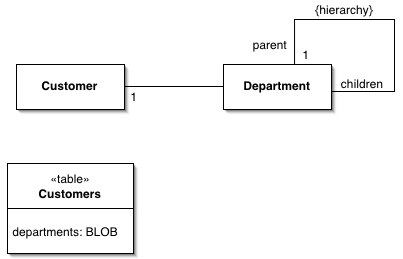

Serialized LOB (Сериализованный LOB)

Паттерн проектирования Serialized LOB
Описание Serialized LOB
Хранение графа связей объектов в БД посредством сериализации их в один large object (LOB).
Объектная модель зачастую содержит сложные графы взаимосвязей мелких объектов. Большая часть информации в таких структурах содержится не в самих объектах, а в связях между ними. Например, при работе со структурой организации, объектная модель достаточно хорошо может отразить все взаимосвязи между структурами и можно с лёгкостью добавлять методы, позволяющие получать данные об отделах и их взаимосвязях.
Но хранение этой структуры в БД - не такая уж и простая задача. Первое приходящее на ум решение - таблица "организация" с внешним ключём к родителю. Но работа с такой структурой БД требует использования JOIN'ов, которые одновременно медленные и громоздкие.
Объекты не нуждаются в представлении в виде связанных записей в таблице. Есть другая форма представления - сериализация, когда весь граф объектов записывается в один LOB (large object).
Использована иллюстрация с сайта Мартина Фаулера.